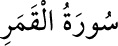

<a name=9031></a><br/>
<b>54- KAMER SÛRESİ</b><br/>
<i><b>Ayın yarılması mûcizesi bu sûrede anlatılır. </b></i><br/>
<i><b>Onun için bu adı almıştır. </b></i><br/>
<i><b>Mekke’de inmiştir, 55 âyettir.</b></i><br/>
